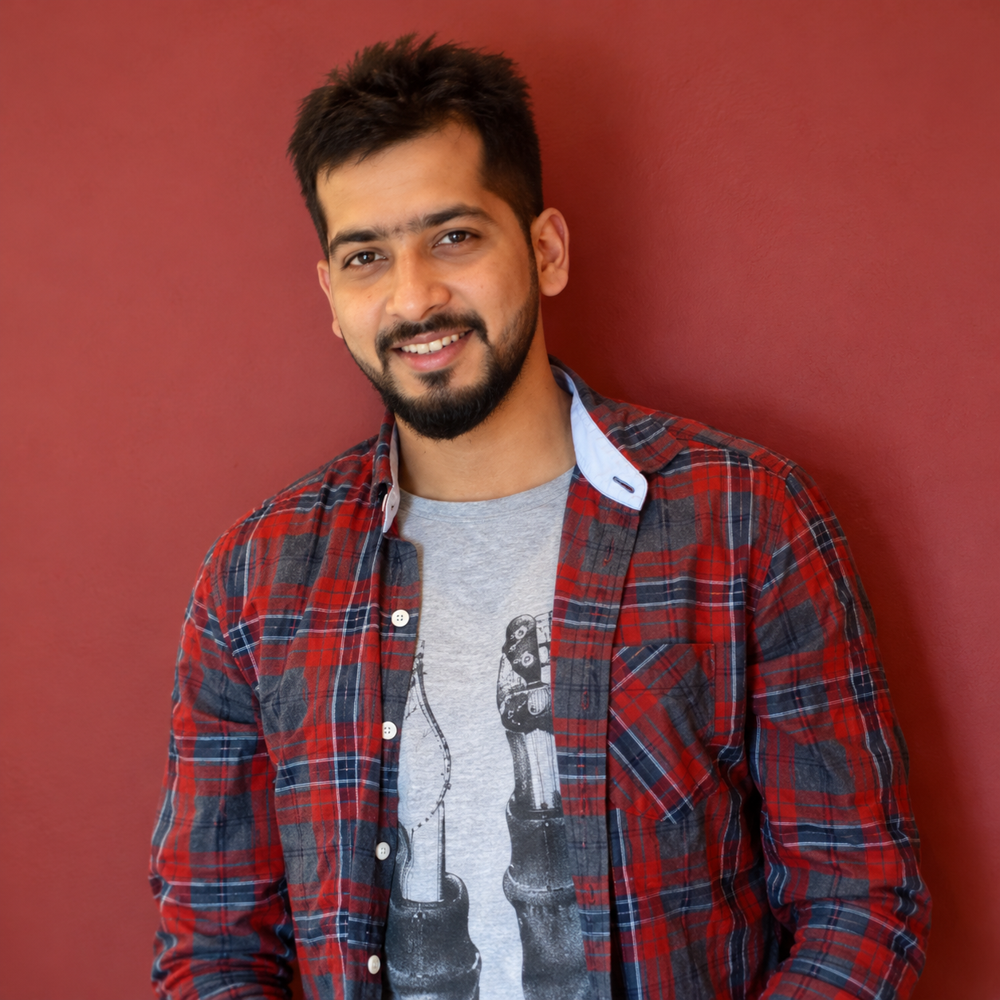

01Systems / TypeScript
my_agent
A TypeScript playground for building agentic workflows and exploring how software can reason, act, and collaborate.
View repository ↗↗
Eindhoven · The Netherlands
Engineer III at Thermo Fisher Scientific, building robust automation and testing infrastructure — with the precision of an ICC Level 1 cricket umpire.

Selected work
01—03
A TypeScript playground for building agentic workflows and exploring how software can reason, act, and collaborate.
View repository ↗A focused web experience with an emphasis on clear information architecture and a polished, approachable interface.
View repository ↗A cluster of experiments around live bidding, auction flows, and interactive sports products: mini app, season app, and live worker.
Explore repository ↗Season management work for the Eindhoven Cricket Club ecosystem — bringing fixtures, teams, and club operations into a clearer digital experience.
View repository ↗A supporting worker for live IPL experiences, focused on moving event-driven data through the product while the action is happening.
View repository ↗Published & deployed work
LIVE WEBSITES
Career timeline
2011—NOW
Eindhoven, Netherlands
Precision and decision-making on the field.
Test automation frameworks for front-end and back-end testing of ASML machines.
Bangalore, India
Greater Bengaluru Area, India
A little about me
My day-to-day work is rooted in agile delivery, test automation, and building dependable engineering infrastructure at Thermo Fisher Scientific. I’m also an AI enthusiast who loves creating new things — experimenting with agents, automation, and ideas that turn a blank page into something useful. Outside technology, I’m an ICC Level 1 cricket umpire with KNCB — a second career that keeps precision, judgment, and calm under pressure close at hand.
Have a good problem?
Whether you’re looking for a collaborator, a builder, or simply want to exchange ideas, I’d love to hear from you.
Start with GitHub ↗